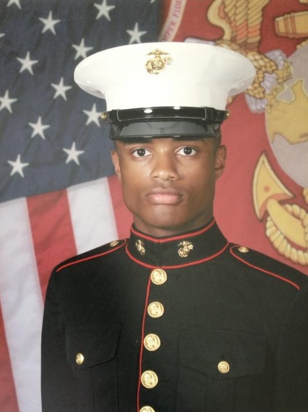

Welcome to Project Heroes Guiding Heroes!
Hello! I am the creator of Project Heroes Guiding Heroes and I know you're probably wondering who, what and why pertaining to Project Heroes Guiding Heroes so I'm here to answer those questions for you!
Who?
Well, I am USMC Veteran, Sergeant Jerry Mack and I completed 5 years of service starting in December of 2012 and separated from the Marine Corps honorably in December of 2017. I graduated from Parris Island USMC Bootcamp in March of 2013 and my life changed forever after that. I spent most of my 5 years of service in Iwakuni, Japan, and Camp Pendleton, California which I enjoyed thoroughly. By the time I was promoted to Sergeant I was a Senior Aviation Electronics Technician, certified by the FAA to inspect and approve the repairs of complex aviation systems and equipment. It was my duty and responsibility as a Sergeant of Marines to train junior Marines on how to solve complex problems by troubleshooting, thinking logically, and implementing cost-saving solutions so our birds could stay in the sky and our pilots could train!
After the Marines, my interest in advanced aerospace technologies led me to graduate from Embry Riddle Aeronautical University with my A.S. in Aeronautics. My interests, my degree, and ultimately my drive led me to work at L3 Harris Technologies as a Field Service Engineer where I managed multiple security devices at the Daniel K Inouye International Airport in Honolulu.
I am currently a Biomedical Technician in the Engineering Department, at one of the highest-rated hospitals in the state of South Carolina, but I am looking for opportunities to start professionally developing software. I typically work 40 hours a week, learn and implement code 4 hours a day, and manage to be a full-time Software Development student at Western Governors University so I’m a very driven and goal-oriented veteran breaking into the tech industry.
What and Why?
If you're wondering what Project Heroes Guiding Heroes is, this is the section for you, so let’s dive in! Project Heroes Guiding Heroes' mission is to become one of the top resource hubs for active-duty military members and veterans offering resources that help with transitioning, family support, and mental health.
These topics were strategically chosen due to the challenges transitioning military members face going back to their civilian lives, family support because the military is challenging on our families, and of course mental health resources because of the high suicide rate that active duty and veterans are challenged with every day.
Project Heroes Guiding Heroes also seeks to become a funnel for active-duty military members and veterans to enter the fast-growing tech industry because we have what it takes to create, secure, and deliver outstanding products, assets, and services.
That’s enough about me and Project Heroes Guiding Heroes, the rest is all about you!